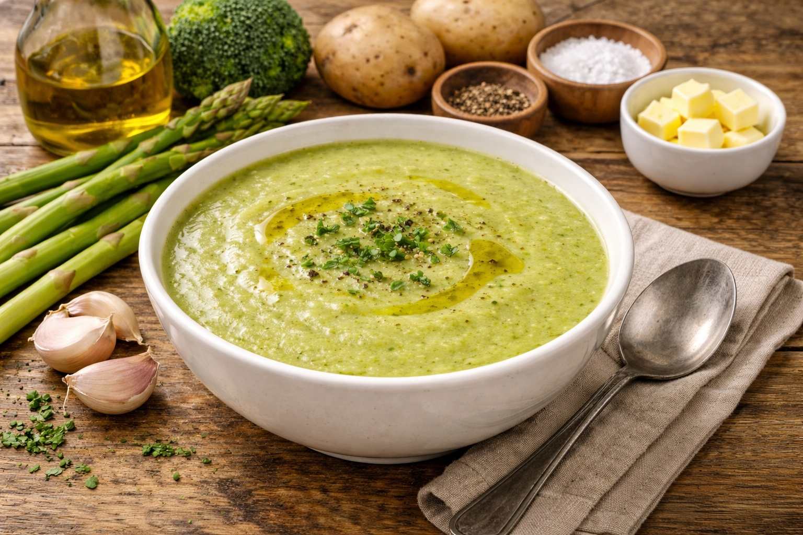

Whole Foods Recipes: Croissants
Last updated: March 21, 2026

A practical v1 guide to homemade croissants built around butter, dough, patience, and realistic expectations. This is less about rushing to a bakery result and more about understanding the process well enough to climb the mountain one stage at a time.
- Croissants are a project: this is a multi-stage bake, not a quick bread recipe.
- Temperature control matters: dough and butter need to stay in the right range for lamination to work.
- First success is structural: v1 does not need to be bakery-perfect to be a real win.
- Patience beats force: chilling, resting, and working cleanly are part of the recipe.
Purpose
Croissants are one of the clearest examples of skill-based baking. They depend on simple ingredients, but those ingredients have to be handled with care. Dough strength, butter consistency, lamination, shaping, proofing, and baking all matter.
This v1 is meant to create a realistic starting point. The goal is not to pretend croissants are easy. The goal is to break the process into understandable stages so the first attempt becomes productive instead of intimidating.
Ingredients
For the détrempe (main dough)
- 500 g all-purpose flour or bread flour
- 60 g sugar
- 10 g salt
- 10 g instant yeast
- 300 ml cold milk
- 40 g softened butter
For the butter block
- 250 g cold unsalted butter
For finishing
- 1 egg
- 1 tbsp milk or water for egg wash
Equipment
- Rolling pin
- Large mixing bowl
- Plastic wrap or reusable wrap
- Parchment paper
- Baking sheet
- Ruler or measuring guide
- Knife or pizza cutter
- Optional: stand mixer
Why croissants are challenging
Croissants are difficult because the dough and butter have to cooperate. If the butter gets too warm, it smears. If it is too cold, it breaks into chunks. If the dough resists, rolling becomes uneven. If the proof is off, the bake suffers.
That means this recipe is not mainly about flavor adjustment. It is about process control. The first attempt is valuable because it teaches the feel of the system.
Process overview
- Make the main dough and chill it.
- Shape the butter into a flat block and keep it cold but workable.
- Enclose the butter inside the dough.
- Roll and fold the dough in stages, chilling between turns.
- Roll out the final sheet and cut triangles.
- Shape the croissants.
- Proof until puffy and delicate.
- Egg wash and bake until deeply golden.
Method (v1 baseline)
- Mix the flour, sugar, salt, yeast, milk, and softened butter until a smooth dough forms.
- Knead until the dough is cohesive but not overworked. Shape into a rectangle, wrap, and chill.
- Place the cold butter between parchment and pound or roll it into a flat rectangle. Chill until firm but pliable.
- Roll the dough into a larger rectangle and enclose the butter block inside.
- Roll the laminated dough out carefully and complete the first fold. Chill.
- Repeat the rolling and folding process for the required turns, chilling between each round.
- After the final chill, roll the dough into a large sheet and cut long triangles.
- Shape each croissant by rolling the triangle from base to tip.
- Proof until visibly puffy and jiggly but not collapsing.
- Brush with egg wash and bake until well browned and layered.
Total time
- Active work: about 1½ to 2 hours
- Resting and chilling: several additional hours
- Total project time: often half a day or more
What success looks like for v1
For the first attempt, success does not have to mean perfect bakery croissants. A good v1 result might simply mean:
- the butter stayed mostly layered instead of leaking everywhere
- the croissants visibly rose
- the shape was recognizable
- the inside showed some layering
- the flavor was good enough to justify doing v2
Common risks
- Butter too warm: causes smearing and destroys clean layers.
- Butter too cold: causes breakage and uneven lamination.
- Rushing the process: creates frustration and messy structure.
- Overproofing: can weaken the final shape before baking.
- Underbaking: can leave the center dense or gummy.
Notes (v1)
- Cold matters: keeping the dough and butter in the right range is more important than speed.
- Clean edges help: straighter rectangles lead to better folds and more consistent croissants.
- Do not force rolling: if the dough fights back or the butter softens, chill and continue later.
- Expect learning: the first batch is part recipe, part training session.
- Batch mindset helps: treat the first run as experience you can build on, not as a final exam.
Personal note
Croissants are the big mountain in this roadmap because they combine baking, precision, and patience. They are not the same kind of challenge as seco de res or lomo saltado. They demand more structure and more calm.
That is also why they are worth doing. Once the first batch is done, even imperfectly, the process becomes less mysterious and the next version becomes possible.
Next steps
After real execution, update this to v2 with actual notes on butter handling, dough resistance, proofing time, and final bake quality.
Continue with more Whole Food Cooking.
This article focuses on practical baking and recipe execution, not medical advice.